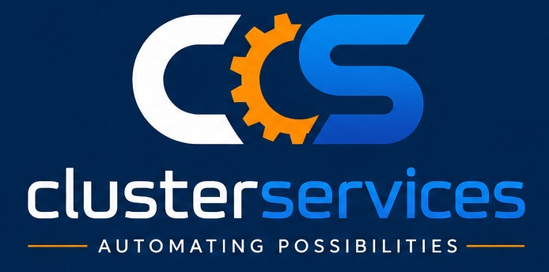

Reliable Automation Solutions for Modern Industries
PLC, SCADA, batch control and validation automation for pharmaceutical manufacturing systems.
Machine automation using PLC, HMI, servo and motion control technologies for high-speed production systems.
Process automation, instrumentation and safety systems for continuous and batch chemical operations.
Tank farm automation, flow monitoring, SCADA and remote monitoring solutions for oil and gas plants.
Automation for WTP, STP and RO plants including pumps, dosing, filtration and monitoring systems.